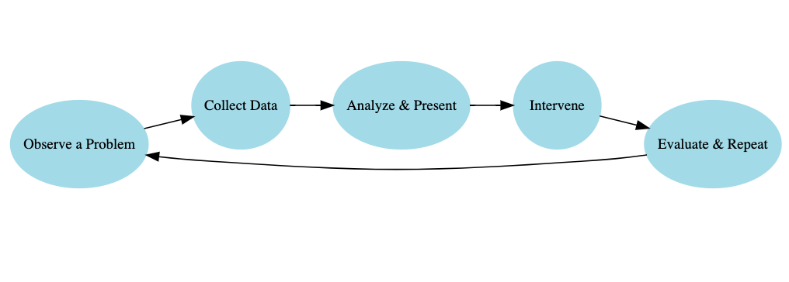
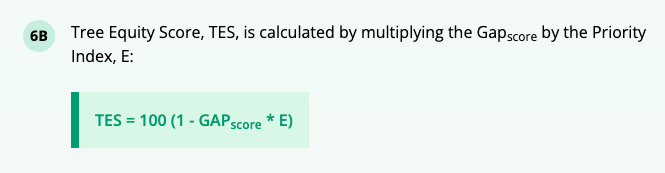

Tree Equity Instructor Guide
1 What is Data Science and Why Urban Planning

- Key Idea: Data science is about extracting insight from data to inform action.
- Focus on applications of data science that connect to students interests
- Ask students to add their own example of data science they’ve seen and why they suspect it to be data science.
Emphasis on Data science and Urban Planning as a cycle that is repetitive. There is always new data being collected and new solutions to be found. This opens up possibilities for limitless data exploration within the field which makes it an amazing introductory example of data science for beginner students.
3 Understanding the Tree Equity Score
Here you can find the methodology behind American Forests Tree Equity Research.
- The Tree Equity Score represents the Need for tree planting in an area. Need or Priority in a neighborhood is calculated by a number of factors that may highlight the potential for the area to be disproportionately affected by extreme heat, pollution and other environmental hazards which could be reduced with the benefits of trees.

4 Foundational Learning
DS4HS places a priority on shifting the narrative on data scienc and its accessibility. One of the main goals of this curriculum is to make content as tangible as possible for those with experience in data or statistical analysis. This section introduces key concepts in data science and we want to make sure these concepts are grasped as thoroughly as possible.
Observation vs. Observational Unit: Be explicit—each row is one observation, and the observational unit is the “thing” each row represents (e.g., a tree, a bus stop, a city block).In this example the “GEOID” represents one city block group
Ask: “What is one row describing?” Have students answer in plain language.
Variable Types: Clarify the difference between categorical and numerical variables. Use color/highlight in your slides or board to mark a few examples from the dataset. Students often confuse column headers for variable values. Reinforce that variables are columns, values are entries in rows.
If possible, have students follow along in R to observe the data set. This can help them get used to the variable names and what a typical value looks like for a given variable.
5 Mathlink Cubes
In every lesson, there is some for of interactive portion to help students grasp the task of data wrangling through a physical simulation of the practice.
This example comes from an article in the Journal of Statistics and Data Science Learning (McGowan 2025). Using Mathlink Cubes to Introduce Data Wrangling1 helps to facilitate a tangible understanding of datasets and data manipulation.
This example can also be replicated with paper strips and squares (though the creation of these materials may be tedious.)
- Hand out Mathlink Cubes to students in the form of “a dataset” meaning cubes are arranged in columns by color. Dependending on the size of your data set(amount of rows), students will need that many blocks of a unique colored block for the mutate example.
6 Teaching tidyverse and ggplot
6.1 Core Goals
Students experience transforming a dataset using tidyverse data verbs
They start asking questions of the data: Who’s impacted? Where? What relationships exist?
Students see visualization as a tool for insight, not just graphics.
6.2 Pedagogical Tips and Emphases
1. Emphasize the “verbs” as actions
Anchor each function to a mental model:
filter()= “cut out rows you don’t need”select()= “keep only the columns you care about”mutate()= “make new columns using calucaltions with exsisting ones”groupby()= “Sort data into baskets by value”summarize()= “Pull out the big-picture”
2. Highlight data types when visualizing
Categorical → bar/column
Continuous → histogram, scatter
Time-based → line plot
Encourage asking: “What kind of variable is this? What would help me see patterns?”
3. Don’t skip reading outputs
Stop after each code chunk and ask: “What changed? What does this output tell us?”
It’s easy for students to focus on syntax and miss what the data is really saying.
4. Ask real-world connection questions
“What trend do you notice?”, “What might explain that relationship?”, “What other variable might influence both?”
Encourage students to answer these questions in normal and confortable language rather than expecting a more refined “data-sciency” answer. This will help bridge the gap between their common sense and trained data analysis
7 Student Exploration + Final Project
This capstone activity gives students the chance to apply everything they’ve learned from the lesson. It should feel open-ended and empowering, encouraging curiosity and creative problem-solving.
This is also the moment where data becomes personal and meaningful: students choose their question, their variables, and their visualization. The instructor’s role shifts from direct teaching to coaching, guiding students to sharpen questions, troubleshoot code, and draw clear, grounded conclusions.
7.1 Group Work Guidance
Students should work in groups of 2–4, ideally with access to a shared device
Encourage them to:
Settle on a single state or comparison they find interesting.
Write out a clear, answerable question (this may take several revisions).
Students will use R to generate at least one graph and one statistical summary.
Instructors or mentors should:
Circulate and offer help with debugging.
Ask clarifying questions to refine vague research questions.
“What are you trying to compare? What variable would show that?”
7.2 Managing Student Presentations
Each group should give a short (~3–4 min) presentation of: - Their question - What data they used - Their plot(s) and the trends they suggest - A brief interpretation: “What does this mean?” and “Why does it matter?”
While students present:
Highlight clarity of visualizations, originality of questions, or insightful interpretations.
Celebrate one strong point from each group to model good data science communication:
“What I loved about this presentation was how clear the graph labels were — it helped us understand the pattern immediately.”
References
Footnotes
D’Agostino McGowan, L. (2025). Using Mathlink Cubes to Introduce Data Wrangling with Examples in R. Journal of Statistics and Data Science Education, 1–10. https://doi.org/10.1080/26939169.2025.2485234↩︎